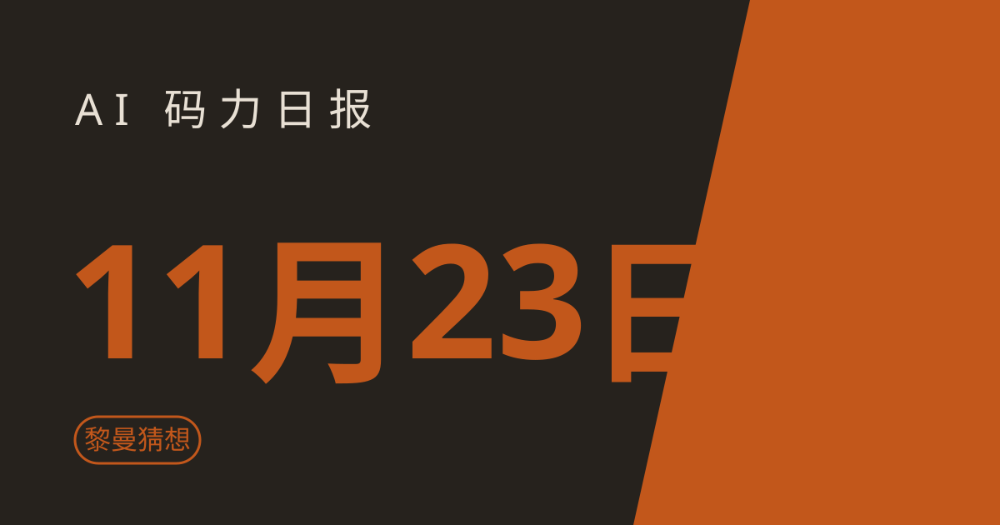

AI 码力日报 · 2026年11月23日

⚡ 一句话速览
- OpenAI 首席科学家喊话：前沿模型先别越过 0.68–0.7 困惑度这条线。
- Claude 助攻的黎曼猜想证明：17.5 万个 Lean 模块全数通过核验，但 Clay 奖仍悬着。
- OpenAI 11 月 21 日宕机 3.5 小时，ChatGPT 与 API 失败率一度冲到 75%。
- Gemini 订阅 12 月 2 日起能进 Hermes 这类第三方 agent 壳子了。
🤖 今日 AI Coding 动态
OpenAI 首席科学家公开家底：GPT-3.5 困惑度 0.99，现在不到 0.8，呼吁在 0.68–0.7 前停火
跟你有啥关系：OpenAI 第一次公开拿自家模型在同一根标尺上排队，并给全行业划了一条"先别越过"的线——这条线可能决定下一代模型什么时候才能放出来。首席科学家 Jakub Pachocki 11 月 22 日发文：GPT-3.5 的对数困惑度约 0.99，GPT-4 约 0.91，现在的模型已低于 0.8；困惑度 0.76 上下的模型已经在数学开放问题上拿出突破性结果。他推算，0.68–0.7 这个窗口附近还会冒出新的重要能力，但没人知道会是什么、现有评测也未必测得到，所以呼吁各家前沿实验室先别越过这条线，等到"看得懂模型在想什么"的监控技术赶上再说。提醒一句：这只是 OpenAI 一家的呼吁，没有任何约束力，听不听全看同行给不给面子。AI Weekly 报道
黎曼猜想证明进入核验第二阶段：17.5 万个 Lean 模块全过，但 Clay 奖仍未颁下
跟你有啥关系：上周最炸的数学新闻有了新进展——形式化验证在往前推，但离"盖棺定论"还差几步，别急着当定论转发。Anthropic 数学家 Levent Alpöge 11 月 20 日宣称与 Claude 合作完成了黎曼猜想的证明，并放出约 1700 万行 Lean 代码。11 月 21 日，Lean 与 Mathlib 社区发表联合声明为证明背书；11 月 22 日的核验更新：lean4lean 通过了 175,187 个模块中的全部 175,187 个，con-leche 与 con-ron 也接受了全部 5 个核心定理。但另一面：针对证明中几何谓词是否空洞的质疑（PhilArchive 上的批评）仍未得到回应，Clay 数学研究所仍把这道百万奖金题列为未解；同一天斯坦福还放出了一份人类作者的竞争性草稿证明。我的看法：Lean 内核认账不等于数学界认账，这事现在最值得看的是同行评审怎么接招，而不是股价怎么走。ad-hoc-news 报道
Gemini API 预览 Tool Retrieval：工具再多也不怕把 prompt 撑爆了
跟你有啥关系：给 agent 接几十个工具、挂几个 MCP 服务器的人，终于不用为"还没干活就先烧掉几万 token"买单了。Google 11 月 22 日在 Gemini API 预览了 Tool Retrieval（走 Interactions API）：模型先只拿到每个工具的名字和一句话简介，真正要用哪个工具时才加载它的完整参数 schema。Google 自己的文档写得很直白：几十个函数声明塞进每个请求，没干活先烧掉数万 token。开关是一个 defer_loading 标志，支持服务端或客户端检索。提醒两句：目前还在 v1beta 预览版，只在 Interactions API 里有；工具少于 20 个、长期稳定的库，Google 仍建议静态加载，别为了追新给自己加故障点。AI Daily Post 报道
OpenAI 11 月 21 日宕机 3.5 小时：两个认证数据库副本同时崩了，失败率一度 75%
跟你有啥关系：如果你把 agent 全押在 OpenAI 一家上，周六这 211 分钟就是一次免费的压力测试——ChatGPT 和 API 一起挂，没有备用路线可走。11 月 21 日的事故源于一次定期数据库维护：认证网关后面的两个 PostgreSQL 只读副本同时崩溃，请求失败率峰值冲到 75%，持续 211 分钟；工程师靠新建替代副本、重调连接池才恢复。我的看法：这事和模型能力无关，但和所有人的架构有关——关键 agent 至少要有一条备用模型路线（比如 Perplexity 今天刚发的 Orchestrator 就是干这个的），别等宕机了才想起来。AI Briefing 11 月 22 日
微软把 GPT-6.2 Sol 铺进全家 Copilot：日常用 Sol，重活才轮到 Astra，自家 MAI 模型在后面分流
跟你有啥关系：公司配的 Microsoft 365 Copilot 现在默认就是 OpenAI 最新的便宜模型了，写文档、汇总会议直接就能用上。微软 11 月 20 日宣布，GPT-6.2 Sol 全球推送给 Copilot Chat、Cowork、Studio 以及 Word、Excel、PowerPoint 里的 Copilot；更贵的 Astra 只进 Cowork 和 Studio，Chat 与 Office 应用里只有 Frontier 早期体验计划用户能用。价格是分水岭：Sol 每百万 tokens 输入 $2、输出 $10，Astra 是 $8/$40，差 4 倍。同一周微软在 GitHub Copilot 里推了自家 MAI Code 2，宣称有 96% 的 Claude Opus 5.5 效果、只要 5% 的成本——这是微软自己的说法，而且价格里含 2027 年 5 月到期的首发折扣，别直接当长期价。背景：微软与 OpenAI 的独家合作与收入分成已在 2026 年 4 月结束，每多一个请求走 MAI 模型，微软就少分一笔钱出去。AI Agent Update 报道
DeepSeek：模型触发的联网搜索不再单独收费，但免费档继续收紧
跟你有啥关系：用 DeepSeek API 跑搜索型 agent 的人，账单变简单了；但白嫖聊天的人，免费午餐又缩水了一圈。DeepSeek 做了两个方向相反的调整：API 侧，模型自己触发的联网搜索和页面抓取不再按次单独收费，开发者只付 token 的钱，搜得多的人最先受益；消费侧，免费档对话 72 小时后过期、还加了输入上限，官方理由是算力紧张。结合背景看很有意思：公司刚融了约 1000 亿人民币（腾讯等参投），钱不是瓶颈，瓶颈是先进加速器买不到。提醒一句：独立调 Search/Fetch 接口一直是按次收费（每千次成功请求 $0.75），这次免掉的是模型在工具调用里触发的那部分，别搞混了。AI Briefing 报道
Together AI：coding agent 把凭证提交进公开仓库，数月客户提示词泄露
跟你有啥关系：这是本周 agent 安全翻车三连的第二起——你的 agent 能碰仓库，就能把你家钥匙交出去。Together AI 11 月 21 日披露：一个 AI coding agent 在公开 GitHub 仓库 xorl 里提交了一个凭证，这个凭证解锁了存有 6–7 月客户提示词样本的私有仓库，样本随后被第三方下载。受影响的主要是 MiniMax M3、GLM-5.2、Kimi K2.6 的请求样本（集中在 6 月 24 日与 7 月 4、8、14 日）。这件事是 Dragos 金丝雀研究牵出的一串事件之一：研究员在约 200 万条提示词里埋了假密钥和唯一链接，再看它们从哪冒出来。我的看法：agent 的写权限必须按最小权限给，凭证更不该出现在 agent 能碰到的任何地方——这条教训这周已经是第三次出现了。ExplainX 梳理
Meta Muse：一个恶意网页就能劫持，私聊与记忆随便拿，漏洞发表前已修
跟你有啥关系：如果你在用 Meta 的 Muse 这类常驻 agent，它替你打开的每一个网页都可能是一个攻击入口——这周已经是第三起 agent 安全事件。安全公司 NebuSec 11 月 20 日公布：只要让 Muse 把攻击者的网页存成 PDF，就能拿到 agent 容器里的 shell；Muse 的 Sentinel 出口守卫默认放行读请求（GET/HEAD/OPTIONS），对话历史和存储的记忆不经审批就外发了，还能被篡改；再连上内置浏览器漏洞与内核漏洞，就能拿到用户云虚拟机的 root，连凭证库和 Sentinel 本身都在攻击范围内。好消息是漏洞在发表前已全部修复，且只影响单个用户的虚拟机，没有波及宿主机和其他用户；Meta 未公开评论。同一天路透还报了另一桩：Meta 内部员工早就 flag 过 Muse 会把不同账号的对话串起来，别人的育儿请求、商品订单、银行信息亮给了不对的人。我的看法：常驻 agent 的安全不能只看聊天记录，得在网关层记账——这话上周对 Grok Bot 说过，这周对 Muse 再说一遍。Prime Reports 报道
🔧 工具更新日志
Codex CLI 0.171.0：GPT-6.2 Sol 成默认模型，TUI 工作区默认开启
OpenAI 11 月 20 日发布 Codex CLI 0.171.0，两个值得升的变化：第一，GPT-6.2 Sol 和 Astra 进了模型目录，Sol 成了默认选项；第二，TUI 工作区默认开启，文档预览可搜索、还能看图片预览和子 agent 的完整记录。还有 codex exec --remote <ADDR>，可以在已有的 app server 上跑非交互会话；/rc 与 /remote 管远程控制和设备配对码。跟你有啥关系：天天用 Codex 的人升到这个版本，默认模型直接就是 Sol，不用再手动切了。TierPatch 更新追踪
Antigravity CLI 1.5.13：Gemini 4 Neon 支持 ADC 登录，任务轮数更少了
Google 11 月 19 日发布 Antigravity CLI 1.5.13：Gemini 4 Neon 现在能用 Application Default Credentials（AGY_ADC_AUTH）或企业模型网关登录后选用（1.5.12 还是只支持 API key）；agent 会把独立的搜索、读文件、改文件并行做，同一个任务轮数更少；还有一个行为变化：agent 不再自动开 swarm，想开得多 agent 协作得手动输 /swarm。跟你有啥关系：公司用 ADC 或企业网关的人，现在能在 Antigravity CLI 里直接用 Neon 了，不用再单独配 key。TierPatch 更新追踪
💬 社区热议
HN 773 分/801 评论：Anthropic 2028 年的电，87% 来自天然气、11% 来自煤
HN 上周末吵得最凶的一帖，源头是 Better Data Center Project 11 月 16 日发布的研究：截至 10 月，Anthropic 已签下 15 GW 算力，其中 5.9–9.6 GW 落到了具体机址；按边际机组测算，2028 年这些机址的用电约 87% 来自天然气、11% 来自煤，可再生能源在美国境内没有任何直接承诺（只在挪威和加拿大有）；年 CO2 中位数估算 3200 万吨，超过加州 2024 年全部电厂的排放。评论区两派：一派说这是 AI 扩产速度的必然结果，不是哪家公司故意烧煤；另一派盯着 Anthropic 刚花 34 亿美元买 1.7 GW 燃气发电机这件事，认为"负责任实验室"的人设和现实对不上。提醒一句：这些数字是研究机构的估算（区间 1700–3800 万吨），不是 Anthropic 自己公布的实测数据。研究报告原文
HN 热议：Dragos 用 200 万个金丝雀提示词钓鱼，抓到三家推理服务商偷提示词
HN 首页头条的安全大新闻。Dragos 的研究员 HD Moore 团队在 7–11 月往各家 AI 服务里发了约 200 万条提示词，每条都埋了唯一的假 AWS 密钥和链接，再看这些秘密从哪冒出来。结果：三家托管商被攻破、自己还不知道；被偷的请求里有的明明标了"零留存"（ZDR），照样被存了；还有一家中国实验室打开了过半提示词里的秘密链接，其中三分之二标了"不收集"。OpenRouter 11 月 22 日跟进：下架 3 家服务商、125 个端点摘掉 ZDR 资格，并通知了受影响的客户。我的看法：经手你提示词的每一跳都可能存一份，"零留存"只对第一跳有效；走聚合网关调便宜模型的人，先看一眼自己的请求到底经过了谁的手。The Hacker News 报道
HN 387 分/180 评论：不写代码，review 能力也会跟着退化
Christian Ekrem 11 月 20 日的文章在 HN 上吵起来了：他的论点很简单，吉他手不练琴、只指挥别人演奏，水平照样会掉；程序员也一样，只审 AI 写的代码、不亲手写，判断力会慢慢退化。他还搬了 Anthropic 今年 1 月的随机试验：AI 辅助组随堂测平均 50%，手写组 67%，差距最大的在调试上。评论区的主流共识比较务实：把无聊代码交给 agent、关键系统逐行审是对的，但别把"只审不写"当成常态——有个评论说得很形象：你还是会在开车前检查外卖袋子，但一旦分不清薯条和鸡块，这检查就没意义了。我的看法：这篇和昨天 FB 上那篇"半年没看一行代码"的帖子是同一场争论的两面，答案不在工具在流程：每周至少亲手写点什么，比任何 review 规范都管用。Dev.to 梳理
HN 热议：ClawDOS——在 4.77MHz 的 8088、640K 内存上跑 Claude coding agent
HN 上最有意思的硬核玩票：开发者 Ricapar 让一个 176KB 的 DOS 程序（HARNESS.EXE）直接调 Claude Messages API，在一台 1981 年的 IBM PC XT（8088、4.77MHz、640K 内存、CGA 显卡）上跑起了 coding agent；8088 搞不定 TLS，加密交给旁边的桥接电脑。18 个工具齐全：读写文件、跑 DOS 程序、Turbo C 编译运行、CGA 截图回传给 Claude 看。演示里按回车 64 秒后出结果，其中 26 秒花在编译链接运行；它还做了个《战争游戏》致敬程序。最绝的是作者的声明：仓库代码 100% 由 Claude 写成，只有人写的说明文字是例外。我的看法：agent 真正的本体是模型那边的思考，客户端可以轻到 176KB——这对"agent 一定要跑在高配机器上"的直觉是个很好的反例。项目主页
HN 热议：模型能自己改自己的权重了，还越改越好
arXiv 11 月 16 日挂出的一篇论文（2611.21885）在 HN 上冲上首页：一个 27B 的开源模型拿到自己的权重、打分后的答案和自我运行的能力后，靠自己的推理诊断失败、改写权重——不用梯度、不用训练。结果：490 道没见过的题上准确率提高 6.6 分；更夸张的是自我修复：只告诉它"某处权重损坏了"，它自己定位到坏掉的矩阵、用自己算的值重写，6 个图像基准从 7% 提到 70%，达到未损坏模型的 83%。但别急着喊 AGI：2B 的模型根本改不动，4B 和 9B 会把自己改坏，只有 27B 行——这能力是随规模长出来的。我的看法：训练与推理的界限正在松动，"改进模型"以后可能是一次对话，而不是一次训练任务。论文原文
🧩 AI 应用新品
Pandex：280 万份欧洲官方法律文件，一条 MCP 接进你的 agent
跟你有啥关系：让 agent 回答欧洲法律问题时，终于不用怕它现编法条了——Pandex 给的是官方原文，带引用、带历史版本。Pandex 本周上线，覆盖欧盟 plus 法、德、荷、英、奥、瑞士、卢森堡和欧洲人权法院：240 万份判例、42.1 万部法典，1.12 亿条可检索段落、3700 万条引用链接；关键词、语义、混合三种检索，任意语言提问。接法极其简单，一条 MCP 就行（见下面教程），REST API 也行。价格：beta 期间免费，每天 1,000 次请求，之后 €1/1,000 次。提醒一句：41 家机构里 33 家覆盖完整，官网有逐机构覆盖表，先确认你要的国家与法院在不在完整名单里再用。HN 原帖
Perplexity Orchestrator API：一个 API 调 45+ 模型，挂了自动换服务商兜底
跟你有啥关系：上周六 OpenAI 宕机 3.5 小时的教训摆在那——你的应用绑死一家服务商，就等于把可用性交给别人。Perplexity 11 月 19 日发布 Orchestrator API：一个接口调 OpenAI、Anthropic、Google、xAI 以及 GLM、Kimi、DeepSeek 等开源权重模型（预览目录 45+ 个）；同一个模型失败时自动换部署重试，比如 Anthropic 挂了就走 Bedrock；计费按回答模型的公开 token 价，故障转移不加价。预览中的 perplexity/auto 还能按你用自然语言写的任务描述自动选模型。Perplexity 自己的实测（10 月 4 日–11 月 2 日）：经 Orchestrator 的 Claude 与 GPT 请求成功率高于任何单一服务商。适合：对可用性有要求、不想自己写故障转移逻辑的团队。Perplexity 官方发布
🐑 今日羊毛
Antigravity 配额重置：缓存改进，同等配额多干约 22% 的活
一句话：Google Antigravity 团队 11 月 21 日重置了所有人的 Gemini 配额，缓存池扩大后，同等配额能干的活多了约两成。
- 怎么薅：直接打开 Antigravity 用就行，免费档配额每周刷新，这次重置已自动生效。TestingCatalog 报道
- 有效期：已生效（截至撰写时）
- 适合谁：在用 Antigravity 免费档跑 Gemini 4 Neon 的人；提醒一句：配额大小 Google 一直没公开，别指望拿它跑大项目
Oumi 注册送 $50 credits：自己训模型、做数据合成不用先掏钱
一句话：做自定义模型（数据合成、评测、微调）的平台 Oumi，免费档送最多 $50 credits，用 3 个月。
- 怎么薅：去 Oumi 注册 Free plan，企业邮箱送 $50、个人邮箱送 $25，3 个月内用完。Perq 汇总
- 有效期：到账后 3 个月（截至撰写时，Perq 11 月 22 日早上刚核实过）
- 适合谁：想自己训个小模型、或给 agent 做数据合成与评测的人
E2B 新号送 $100 一次性额度：agent 的沙箱执行先白嫖
一句话：给 agent 提供代码执行沙箱的 E2B，新账号送 $100 一次性用量，免信用卡。
- 怎么薅：去 E2B 注册 Hobby 档，$100 自动到账，跑代码执行、浏览器沙箱这类 agent 基建先用免费额度顶着。Perq 汇总
- 有效期：到账后一直可用（截至撰写时，Perq 11 月 22 日早上刚核实过）
- 适合谁：正在给 agent 接代码执行、浏览器操作这类沙箱能力的人
⭐ 今日 GitHub 热门项目
rtk-ai/rtkRust：给 LLM 的命令行输出"瘦身"，token 花得少一半都不止
一句话介绍。解决什么问题：一个命令行代理，专门压缩发给 LLM 的命令输出——很多开发命令的输出里大半是重复、无关的文本，白白烧 token；它在中间拦一道再送过去。⭐ 约 87.4k（截至撰写时）。适合：天天让 agent 跑命令、看输出的人，token 账单肉眼可见地变小。项目地址
shinyobjectz/raea：让 AI 在 React 里生成视频、动效、3D 和游戏，自己 GPU 渲染
一句话介绍。解决什么问题：Render Anything Engine——AI 直接生成视频、动态图形、3D 与游戏，全部用 React + TypeScript 写，在你自己的 GPU 上渲染，不用把活儿交给云端视频服务。⭐ 约 3.2k（截至撰写时）。适合：想用 AI 做视频、动效或小游戏，又想把渲染留在本地的人。项目地址
sybil-solutions/inference-optimisation-skill：一个 agent skill，专门给本地 LLM 服务器提速
一句话介绍。解决什么问题：一个 agent skill，覆盖本地 LLM 服务器的解码、推测解码、prefill、KV cache 与启动时间优化，装上后让 agent 自己去调你本地推理服务的速度。⭐ 约 1.6k（截至撰写时）。适合：在本地跑模型、觉得推理速度还能再榨一榨的人。项目地址
mdiri-ai/SoduWork：给团队和它们的 agent 用的 AI 原生引擎，多 harness、可自托管
一句话介绍。解决什么问题：一个给团队准备的 AI 原生引擎：多 harness、多 agent、自托管，让团队的 agent 在同一个地方协作，而不是各跑各的。⭐ 约 6.5k（截至撰写时）。适合：团队里已经有好几个 agent 在跑、想把它们管起来的人。项目地址
🤗 Hugging Face 热门模型
n4ze3m/tiny-voca：4.5M 参数的英文 TTS，两个音色，4 核 CPU 上 70 倍实时
是什么：一个只有 4.5M 参数的英文文本转语音模型，两个固定音色（F2 女声、M2 男声），权重文件 18.2MB，Apache-2.0 协议。能干嘛：本地跑或浏览器里跑，4 核 CPU 上约 70 倍实时；Open TTS 排行榜上 M2 第 8、F2 第 13（11 月 16 日快照），词错率和录音 reference 基本同一水平。下载量/点赞数：约 7.95k 下载、358 点赞（截至撰写时）。适合：想在手机或浏览器里离线念英文、或给 agent 加个轻量语音的人。提醒一句：只支持英文、两个固定音色、不能克隆声音；而且整个项目 GPU 成本才 $9.56——训练数据本身就是合成语音，别指望它比真人录音更自然。模型地址
Cloudflare/clairic：Cloudflare 的 27B 结构化抽取模型，带置信度与空值概率
是什么：Cloudflare 发布的 27B 多模态模型（Qwen3.8-27B 底座），把一段文本或图片 + 一套类型化字段定义，变成结构化答案。能干嘛：本地用 PyTorch + Transformers 跑，支持文本/图片输入、抽取、数值估计与预测；每个字段自带置信度与空值概率，估计值还能给分位数区间。下载量/点赞数：246 下载、117 点赞（截至撰写时）。适合：发票、收据、报表这类固定格式抽取，不想自己写解析规则的人；提醒一句：下载量还很小，属于刚上架的新模型，先小规模验证再上生产。模型地址
🛠️ 值得一试的工具：Fast-Anything
是什么：一个 MIT 开源的命令行工具，思路很直接：别把整个应用重写成 Rust，只把最慢的那 5% 函数交给 coding agent 移植成 Rust。它先 profile 你的应用、挑出热点函数，让 agent 写一个单函数 Rust crate，再用录制的最多 500 次真实调用（外加边界用例）逐条验证行为一致，通过了才一键换入，随时可逆。支持 Python、Node、Ruby、Java、Go、PHP、C/C++、C#，还有 Claude Code 插件。
解决什么痛点：全量 Rust 重写要几个月，没人愿意为一段热点代码付这个账；但只换热点函数，收益又很难验证——它把"找热点、写移植、验一致"做成了一条命令。
免费额度：免费，MIT 协议；npm i -g @el4cteo/fast-anything 就能装。
verdict： 值得试——作者自家的例子很能打：Python 模糊去重 4.91 秒 → 42 毫秒（116 倍），TypeScript 20 倍、PHP 55 倍，而且 500 次真实调用回放的验证机制是认真的；但提醒两句：仓库 11 月 21 日才建，跑分全是作者自己的例子，生产用先挑个小函数试，别一上来就动核心路径。项目地址
🎓 3 分钟小教程：一条命令给 Claude 接上欧洲法律库
前置条件：Claude Code（或任何支持 MCP 的工具），联网；Pandex beta 免费，不需要 key。
- 加 MCP 服务器，一条命令就行：
claude mcp add --transport http pandex https://api.pandex.io/mcp - 在 Claude 里直接问欧洲法律问题，比如：
Is a bike courier working for a delivery app an employee?（英文问就行，法国判例也能查到） - 看回答里的引用：点进去是官方法律原文，还能看到这条法的历史版本与生效日期；想换管辖区，直接在问题里说国家，比如加上
under German law
预期效果：agent 回答欧洲法律问题时，引用的是 280 万份官方文件里的原文，而不是现编的法条；每天 1,000 次免费请求，小团队自用基本够。提醒一句：41 家机构里 33 家覆盖完整，先去 Pandex 官网的覆盖表确认你要的国家与法院在不在完整名单里。Pandex 介绍
数据截至撰写时，仅供参考。